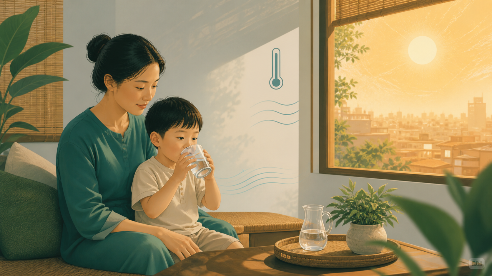

Bản tin sức khỏe 14/08: Giúp trẻ an toàn và ăn uống phù hợp trong ngày nóng
Trẻ ăn ít hơn chưa chắc là bệnh. Gia đình nên theo dõi khả năng uống, mức tỉnh táo, tiểu tiện và dấu hiệu bất thường đi kèm.
Tin gì?Ý nghĩaTác độngHành động
Đọc bản tin hôm nay →